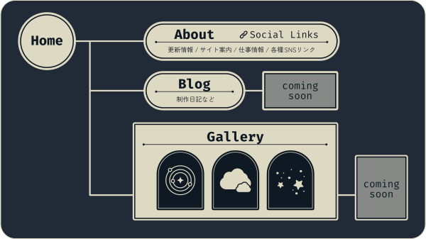

サイトマップ / Site Map
サイトマップ / Site Map

サイトについて / Website Info
梅田あいなの個人Webサイトです。掲載しているすべての作品の著作権は制作者に帰属します。無断での転載・使用・加工はご遠慮ください。
This website is managed by Umeda Aina. All content is copyrighted. Please do not use without permission.
Website launched on June 06, 2025.
プロフィール / Profile
梅田あいな / Umeda Aina
美術大学でイラストレーションとデザインを学び、卒業後はエンターテインメント系の企業などで、プロダクトやWeb、グラフィックなど幅広い制作に携わってきました。
現在はフリーランスとして、アートディレクションのお仕事と、個人表現の両面で活動を続けています。
著書：『Celestial Art Exhibition 天体の事典』
お仕事のご相談・ご連絡はこちらまで
mumecot◆gmail.com（◆→@）